Service Design Sprint
プログラム
シリコンバレー発イノベーションを自走させる
「サービス・デザインスプリント・プログラム」
シリコンバレー発のスタートアップ企業がニューロマジックの新しい事業部として日本上陸。世界各国にてご活用いただいている「Service Design Sprint プログラム」を提供してまいります。
Service Design Sprint プログラムとは？
サービスデザインとデザインシンキング、リーンスタートアップの考え方を取り入れたワークショップ形式のプログラム。最大4日間で課題に対するインサイトを発見し、プロトタイプ作成、検証までを行います。
3つのポイント
Service Design Sprint プログラムには
下記のような3つのポイントがあります。
-
たったの4日間でインサイトの発見から
具体的な解決策まで導く。 -
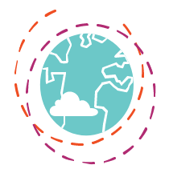
いかなる業界、いかなる状況、
いかなる製品やサービスでも。 -
一度経験すればその後は社内で自走可能。
研修的意味合いも。
Service Design Sprint
プログラム の実績
シリコンバレーで生まれた当プログラムは今や世界6カ国で提供されており、すでに多くの企業様にご活用いただいております。グローバルネットワークにより、各国から集まる様々な知見に基づいた最新のメソッドをご提供可能です。
ケース1：社内の問題解決
シスコシステムズ
課題
短時間かつ最小限のコストで、すべての社員が、革新的なアイデアや製品を生み出せるように社員を教育すること。
結果
社員がService Design Sprint プログラムを習得することで、社員自ら、職種に関係なく、問題の解決策/市場機会を見つけ出したり、製品を向上させるアイデアを生み出すようになった。社内で、自然にスタートアップ精神（起業家精神）が育まれた。
- 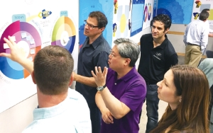 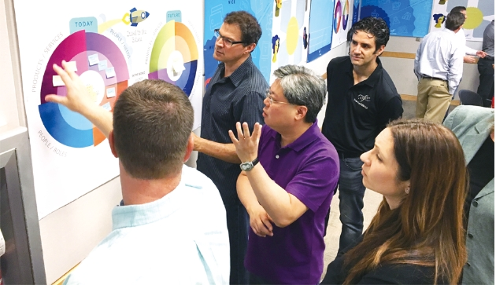
- 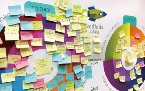 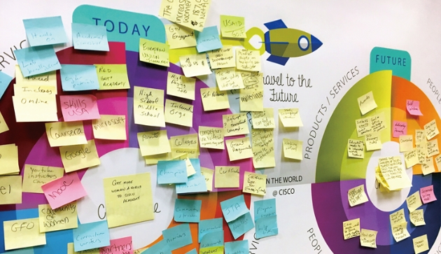
ケース2：公衆衛生における問題解決
マレーシア政府
課題
デング熱の蔓延を阻止するための解決策を導き出す。
結果
直面している問題や課題を正確に捉えることができたため、具体的かつ的確な解決策を生み出した。
デング熱を媒介する蚊の繁殖地や、デング熱の死亡者が出た地域を知らせるアプリをプロトタイプとして開発。
- 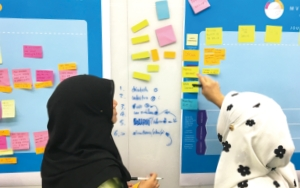 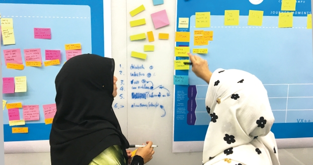
- 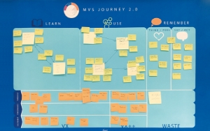 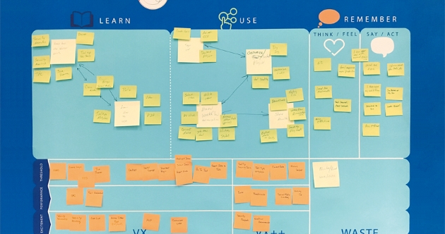
メンバー
-
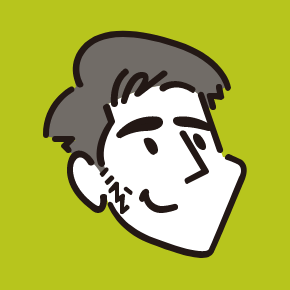
石川 修一
制作部門統括。九州芸術工科大学でCGなどを学び、起業してゲーム開発へ。福岡でWeb制作会社を経営していたが、システムエンジニアとしてニューロマジックでも勤務。Flashエンジニアとしてフロントエンドに転向し、サーバーサイドやクラウド、Webアプリケーション設計を経て現職。工学院大学情報学部システム数理学科非常勤講師。AWS Certified Solutions Architect - Associate。
-
木村 隆二
早稲田大学商学部卒業。
2005年当社入社。2008年にセールス/マーケティンググループを立ち上げ、リーダーとしてグループを統括。営業組織をゼロベースから構築し、現在の顧客サービス体制の礎を築く。2009年より執行役員として「セールス」「マーケティング」「プラニング」「プロジェクトマネジメント」の4つの領域を担当し、マネジメント業務に携わるかたわら、放送、通信、自動車、人材紹介、化粧品など他業種に渡るクライアントワークにも多数従事。2016年10月取締役執行役員に就任。
NEWS
-
2022.8.20
-
2022.8.10
グローバルに活躍する人にフォーカスしたIT global連載の『 サービスデザイン』にて取材記事が掲載されました！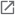
-
2022.8.1
サイトを公開しました